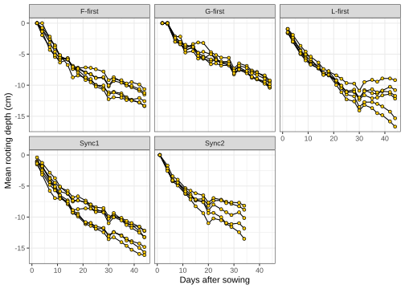
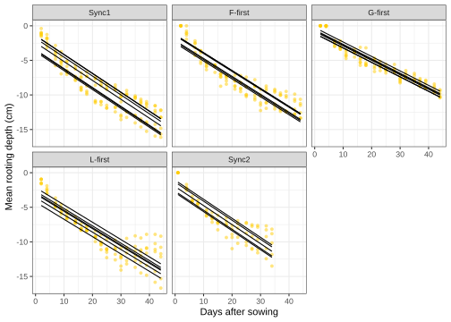
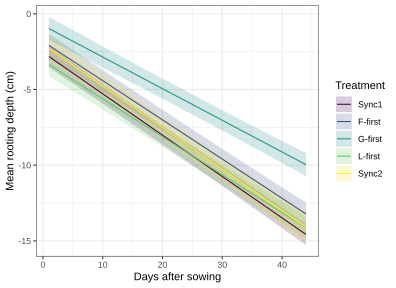
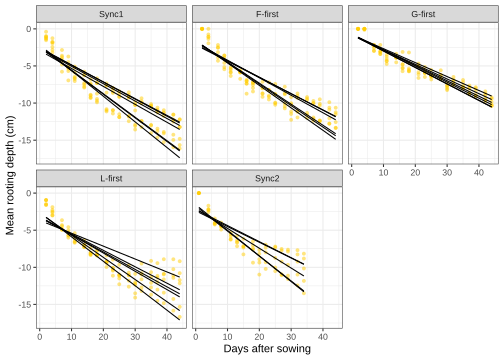
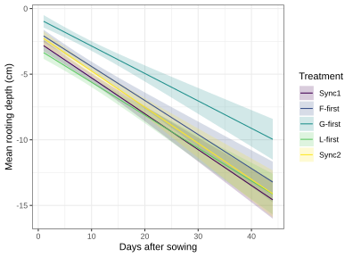

![]()
Show me the code
install.packages("lmerTest")
install.packages("ggeffects")
install.packages("viridis")This tutorial will provide you with a hands-on introduction to linear mixed-effects models using real ecological data from a controlled experiment. You will learn how to fit a linear mixed-effects model with a random intercept using R. You will also learn how to extend the model to include a random slope and understand when this is appropriate. In addition, you will learn how to interpret fixed effects, random effects, variance components, and model summaries. We will also build on previous tutorials by comparing different models.
Let’s get started!
Exceptionally, we will use a different dataset for this tutorial. The data come from a controlled ecological experiment investigating how the order of arrival of three plant functional groups (forbs, grasses, and legumes) affects the vertical distribution of roots in soil.
Our main research question was:
Does plant functional group order of arrival affect the vertical distribution of roots in grasslands?
From an ecological restoration perspective, this question is particularly relevant because manipulating the order of arrival of plant species or functional groups during restoration may influence how plant communities develop belowground. If certain arrival sequences promote deeper rooting, these communities may gain access to water and nutrients from deeper soil layers. This could enhance their resistance to drought and other extreme weather events, ultimately increasing long-term resilience.
To address this question, we conducted a greenhouse experiment in which the order of arrival of forbs, grasses, and legumes was manipulated in rhizoboxes. Rhizoboxes are specialized pots filled with soil and equipped with a transparent front window, allowing researchers to observe and monitor root growth over time.
We tested five arrival scenarios (referred to as Treatment in the dataset):
Sync1: all plant functional groups sown simultaneously at the first sowing event
F-first: forbs sown 10 days before grasses and legumes
G-first: grasses sown 10 days before forbs and legumes
L-first: legumes sown 10 days before forbs and grasses
Sync2: all plant functional groups sown simultaneously at the second sowing event
After establishing the experiment, we photographed the roots visible along the transparent window of each rhizobox three times per week. In total, images were collected at 19 time points. From these images, we quantified the mean rooting depth of each plant community (mrd).
The dataset used in this tutorial contains data from 30 rhizoboxes, with 550 observations and four variables:
mrd: mean rooting depth of the plant community (cm)
Rz: identification number of the rhizobox
Treatment: plant functional group arrival scenario
dafs: number of days after first sowing (i.e., time)
More information about this experiment can be found in the following article: Alonso-Crespo, I. M., Weidlich, E. W. A., Temperton, V. M., & Delory, B. M. (2023). Assembly history modulates vertical root distribution in a grassland experiment. Oikos, 2023(1), e08886.
The fact that we conducted repeated measurements over time using the same rhizoboxes makes the dataset particularly suitable for introducing mixed-effects models.
In this tutorial, we will need to use functions in the lmerTest, ggeffects, and viridis packages. Make sure to install these packages before starting the tutorial.
install.packages("lmerTest")
install.packages("ggeffects")
install.packages("viridis")To work on this tutorial, you will need to load the tidyverse, lmerTest, ggeffects, and viridis packages.
library(tidyverse)
library(lmerTest)
library(ggeffects)
library(viridis)Start by importing the data used in this course (see previous tutorials). You will need to download the data file (data_tutorial10.csv) from Brightspace.
data10 <- read_csv("data_tutorial10.csv") As usual, let’s first make a plot to visualize the data.
In this tutorial, we are interested in modeling the relationship between mean rooting depth (mrd, response variable) and time (dafs). To be able to answer our research question, we also need to test if this relationship changes with plant order of arrival (Treatment).
Create a scatter plot showing the relationship between mean rooting depth (mrd, y-axis) and time (dafs, x-axis) separately for each order of arrival scenario (Treatment). Because repeated measurements were collected for each rhizobox (Rz), we can specify this information in the aesthetics (aes()) using group=Rz. This will allow us to easily add a line connecting the different observations from the same rhizobox using geom_line().
ggplot(data10, aes(x = dafs,
y = mrd,
group = Rz))+
geom_line()+
geom_point(shape=21,
fill = "#FFCD00",
colour = "black")+
facet_wrap(~Treatment)+
xlab("Days after sowing")+
ylab("Mean rooting depth (cm)")+
theme_bw()
Let’s start with what we already know: fitting a simple linear regression model. The idea here is to compare the results of this model with those of the linear mixed-effects models that we will fit later in this tutorial and see how they differ from each other. Since the measurements included in our dataset are not independent (because we measured the average rooting depth in the same rhizoboxes multiple times), we know from the outset that a simple linear regression model is not a good choice in this case. But let’s do it anyway.
Treatment variable is considered as a factor (use as.factor()).lm() to fit a simple linear regression model using mean rooting depth (mrd) as the response variable, and time (dafs) and plant order of arrival (Treatment) as predictor variables. Make sure to include the two-way interaction between the explanatory variables in your model. Store the results in an object called model1.summary() on the model1 object.anova() on the model1 object.data10$Treatment <- as.factor(data10$Treatment)model1 <- lm(mrd ~ dafs*Treatment,
data10)summary(model1)
Call:
lm(formula = mrd ~ dafs * Treatment, data = data10)
Residuals:
Min 1Q Median 3Q Max
-3.4704 -0.9948 -0.1736 1.0235 4.9619
Coefficients:
Estimate Std. Error t value Pr(>|t|)
(Intercept) -1.826349 0.272006 -6.714 4.79e-11 ***
dafs -0.259003 0.010333 -25.064 < 2e-16 ***
TreatmentG-first 1.061768 0.384675 2.760 0.005973 **
TreatmentL-first -1.280747 0.384675 -3.329 0.000930 ***
TreatmentSync1 -0.726108 0.370682 -1.959 0.050646 .
TreatmentSync2 -0.178218 0.426390 -0.418 0.676136
dafs:TreatmentG-first 0.049935 0.014614 3.417 0.000681 ***
dafs:TreatmentL-first 0.008242 0.014614 0.564 0.572997
dafs:TreatmentSync1 -0.014196 0.014082 -1.008 0.313879
dafs:TreatmentSync2 -0.016314 0.019157 -0.852 0.394822
---
Signif. codes: 0 '***' 0.001 '**' 0.01 '*' 0.05 '.' 0.1 ' ' 1
Residual standard error: 1.412 on 540 degrees of freedom
Multiple R-squared: 0.8549, Adjusted R-squared: 0.8525
F-statistic: 353.6 on 9 and 540 DF, p-value: < 2.2e-16anova(model1)Analysis of Variance Table
Response: mrd
Df Sum Sq Mean Sq F value Pr(>F)
dafs 1 5450.9 5450.9 2732.1687 < 2.2e-16 ***
Treatment 4 849.8 212.5 106.4896 < 2.2e-16 ***
dafs:Treatment 4 49.3 12.3 6.1793 7.241e-05 ***
Residuals 540 1077.3 2.0
---
Signif. codes: 0 '***' 0.001 '**' 0.01 '*' 0.05 '.' 0.1 ' ' 1The fitted linear model is highly significant (p < 0.001) and explains 85.2% of the variation in mean rooting depth. We found a highly significant interaction between time (dafs) and plant order of arrival (Treatment), which suggests that the slope of the linear relationship between mean rooting depth and time depends on the plant order of arrival scenario. From the summary output, we can indeed see that the slope of the relationship between mean rooting depth and time becomes less steep when grasses were sown first (G-first).
The main issue with this model is that it incorrectly assumes that all observations are independent. Because repeated measurements from the same rhizobox are correlated, this assumption inflates the number of degrees of freedom available for the analysis.
To take into account the fact that mean rooting depth values coming from the same rhizobox are correlated and not independent from each other, we should consider fitting a linear mixed-effect model to the data. Such a model contains one or more fixed effects (in our case: dafs, Treatment, and their interaction), but also include one or more random effects (in this case: Rz).
In R, you can fit linear mixed-effect models with the lmer() function in the lmerTest R package. A random intercept model can be fitted using the following syntax:
lmer(mrd ~ dafs*Treatment + (1|Rz), data10)
In this model, mean rooting depth (mrd) is modeled as a function of time since first sowing (dafs), Treatment, and their interaction, while accounting for the repeated measurements within rhizoboxes (Rz).
The fixed-effects part of the model is given by dafs * Treatment. These fixed effects describe the average relationship between rooting depth and time across all rhizoboxes. The intercept represents the expected mean rooting depth at day zero for the reference treatment. The reference treatment is usually the one coming first alphabetically (in our case: F-first). The coefficient for dafs represents the average change in rooting depth per day in the reference treatment. The treatment coefficients describe how baseline rooting depth differs among arrival scenarios, and the interaction terms indicate whether the rate of change in rooting depth over time differs between plant order of arrival scenarios.
The random-effects term (1 | Rz) specifies a random intercept for each rhizobox. This means that each rhizobox is allowed to have its own baseline level of rooting depth, deviating from the overall intercept. These deviations are assumed to be normally distributed with mean zero and an estimated variance.
This random intercept model therefore assumes that rhizoboxes may differ in their overall rooting depth but that they share the same time trend and the same treatment effects. In other words, all rhizoboxes are assumed to follow parallel growth trajectories over time, with differences only in their starting points.
Conceptually, the fixed effects describe how rooting depth changes over time and whether this change differs among plant order of arrival scenarios, while the random effect captures unexplained heterogeneity among rhizoboxes.
Rz variable is considered as a factor (use as.factor()).Treatment variable as follows: Sync1, F-first, G-first, L-first, Sync2. By placing Sync1 first, R will use it as the reference level in the model instead of F-first, which would otherwise be chosen automatically because it comes first alphabetically. This can be done using the factor() function and specifying the desired order of the levels with the levels argument.lmerTest::lmer() to fit a mixed-effects model (random intercepts) using mean rooting depth (mrd) as the response variable, and time (dafs), plant order of arrival (Treatment), and their interaction as fixed effects. Use the rhizobox ID number (Rz) as a random effect. Store the results in an object called model2.data10$Rz <- as.factor(data10$Rz)data10$Treatment<-factor(data10$Treatment,
levels=c("Sync1", "F-first", "G-first", "L-first", "Sync2"))model2 <- lmerTest::lmer(mrd ~ dafs*Treatment + (1|Rz),
data10)After fitting a linear mixed-effects model, several functions can be used to explore and interpret the results. The most commonly used are summary(), anova(), and coef().
The summary() function provides a comprehensive overview of the fitted model. For the fixed effects, it reports the estimated model parameters, their standard errors, and associated test statistics. In our example, it shows how mean rooting depth changes over time, how treatments differ from the reference level, and whether the effect of time varies among treatments when interactions are included. In addition to the fixed effects, the summary output includes the estimated variances and standard deviations of the random effects. These values describe how much variation exists among groups, such as differences in baseline rooting depth among rhizoboxes. The output also reports the residual variance, representing unexplained variation within groups. The function also provides a correlation matrix of fixed effects, but this is not something you need to worry about today.
The anova() function is used to evaluate the statistical significance of predictors in the model. It produces an ANOVA table that summarizes how much variation in the response variable is explained by each fixed effect. For each term in the model, the output typically includes a test statistic and a corresponding p-value.
The coef() function provides the estimated coefficients for each grouping level in the random-effects structure. While the fixed-effects table in the summary describes the average relationship across all groups, coef() combines the fixed effects with the estimated random effects to produce group-specific coefficients. For example, it can show the estimated intercept for each rhizobox after accounting for its random deviation from the overall mean. This output is useful for examining how individual groups differ from the overall trend and for understanding the variability captured by the random-effects component of the model.
summary() on the fitted linear mixed-effects model (model2).anova() on the fitted linear mixed-effects model (model2).coef() on the fitted linear mixed-effects model (model2).summary(model2)Linear mixed model fit by REML. t-tests use Satterthwaite's method [
lmerModLmerTest]
Formula: mrd ~ dafs * Treatment + (1 | Rz)
Data: data10
REML criterion at convergence: 1868.7
Scaled residuals:
Min 1Q Median 3Q Max
-2.1374 -0.7551 -0.1120 0.5773 3.2938
Random effects:
Groups Name Variance Std.Dev.
Rz (Intercept) 0.6126 0.7827
Residual 1.4770 1.2153
Number of obs: 550, groups: Rz, 30
Fixed effects:
Estimate Std. Error df t value Pr(>|t|)
(Intercept) -2.552457 0.366690 45.698286 -6.961 1.08e-08 ***
dafs -0.273198 0.008231 514.964927 -33.189 < 2e-16 ***
TreatmentF-first 0.726108 0.539753 45.698286 1.345 0.18518
TreatmentG-first 1.787876 0.539753 45.698286 3.312 0.00181 **
TreatmentL-first -0.554639 0.539753 45.698286 -1.028 0.30956
TreatmentSync2 0.547890 0.580345 49.667436 0.944 0.34970
dafs:TreatmentF-first 0.014196 0.012116 514.964927 1.172 0.24190
dafs:TreatmentG-first 0.064130 0.012116 514.964927 5.293 1.79e-07 ***
dafs:TreatmentL-first 0.022438 0.012116 514.964927 1.852 0.06462 .
dafs:TreatmentSync2 -0.002119 0.016137 514.964927 -0.131 0.89560
---
Signif. codes: 0 '***' 0.001 '**' 0.01 '*' 0.05 '.' 0.1 ' ' 1
Correlation of Fixed Effects:
(Intr) dafs TrtmF- TrtmG- TrtmL- TrtmS2 df:TF- df:TG- df:TL-
dafs -0.516
TrtmntF-frs -0.679 0.351
TrtmntG-frs -0.679 0.351 0.462
TrtmntL-frs -0.679 0.351 0.462 0.462
TrtmntSync2 -0.632 0.326 0.429 0.429 0.429
dfs:TrtmnF- 0.351 -0.679 -0.516 -0.238 -0.238 -0.222
dfs:TrtmnG- 0.351 -0.679 -0.238 -0.516 -0.238 -0.222 0.462
dfs:TrtmnL- 0.351 -0.679 -0.238 -0.238 -0.516 -0.222 0.462 0.462
dfs:TrtmnS2 0.263 -0.510 -0.179 -0.179 -0.179 -0.530 0.347 0.347 0.347anova(model2)Type III Analysis of Variance Table with Satterthwaite's method
Sum Sq Mean Sq NumDF DenDF F value Pr(>F)
dafs 4767.8 4767.8 1 514.96 3228.1055 < 2.2e-16 ***
Treatment 29.3 7.3 4 47.01 4.9625 0.002024 **
dafs:Treatment 49.3 12.3 4 514.96 8.3469 1.576e-06 ***
---
Signif. codes: 0 '***' 0.001 '**' 0.01 '*' 0.05 '.' 0.1 ' ' 1coef(model2)$Rz
(Intercept) dafs TreatmentF-first TreatmentG-first TreatmentL-first
3 -3.460645 -0.2731983 0.7261079 1.787876 -0.5546387
8 -2.517193 -0.2731983 0.7261079 1.787876 -0.5546387
9 -2.552408 -0.2731983 0.7261079 1.787876 -0.5546387
13 -1.802674 -0.2731983 0.7261079 1.787876 -0.5546387
14 -2.863141 -0.2731983 0.7261079 1.787876 -0.5546387
16 -3.568543 -0.2731983 0.7261079 1.787876 -0.5546387
18 -2.600181 -0.2731983 0.7261079 1.787876 -0.5546387
19 -3.019376 -0.2731983 0.7261079 1.787876 -0.5546387
22 -1.438264 -0.2731983 0.7261079 1.787876 -0.5546387
23 -2.043381 -0.2731983 0.7261079 1.787876 -0.5546387
25 -2.902467 -0.2731983 0.7261079 1.787876 -0.5546387
26 -3.676884 -0.2731983 0.7261079 1.787876 -0.5546387
29 -2.381275 -0.2731983 0.7261079 1.787876 -0.5546387
30 -2.042986 -0.2731983 0.7261079 1.787876 -0.5546387
31 -1.593580 -0.2731983 0.7261079 1.787876 -0.5546387
37 -2.017041 -0.2731983 0.7261079 1.787876 -0.5546387
38 -2.382179 -0.2731983 0.7261079 1.787876 -0.5546387
39 -3.024874 -0.2731983 0.7261079 1.787876 -0.5546387
40 -1.640224 -0.2731983 0.7261079 1.787876 -0.5546387
42 -3.752347 -0.2731983 0.7261079 1.787876 -0.5546387
43 -1.407741 -0.2731983 0.7261079 1.787876 -0.5546387
44 -2.899394 -0.2731983 0.7261079 1.787876 -0.5546387
48 -3.230367 -0.2731983 0.7261079 1.787876 -0.5546387
49 -3.226132 -0.2731983 0.7261079 1.787876 -0.5546387
53 -3.425275 -0.2731983 0.7261079 1.787876 -0.5546387
57 -1.914010 -0.2731983 0.7261079 1.787876 -0.5546387
130 -2.436984 -0.2731983 0.7261079 1.787876 -0.5546387
131 -2.145670 -0.2731983 0.7261079 1.787876 -0.5546387
135 -2.120934 -0.2731983 0.7261079 1.787876 -0.5546387
136 -2.487534 -0.2731983 0.7261079 1.787876 -0.5546387
TreatmentSync2 dafs:TreatmentF-first dafs:TreatmentG-first
3 0.5478901 0.01419557 0.06413044
8 0.5478901 0.01419557 0.06413044
9 0.5478901 0.01419557 0.06413044
13 0.5478901 0.01419557 0.06413044
14 0.5478901 0.01419557 0.06413044
16 0.5478901 0.01419557 0.06413044
18 0.5478901 0.01419557 0.06413044
19 0.5478901 0.01419557 0.06413044
22 0.5478901 0.01419557 0.06413044
23 0.5478901 0.01419557 0.06413044
25 0.5478901 0.01419557 0.06413044
26 0.5478901 0.01419557 0.06413044
29 0.5478901 0.01419557 0.06413044
30 0.5478901 0.01419557 0.06413044
31 0.5478901 0.01419557 0.06413044
37 0.5478901 0.01419557 0.06413044
38 0.5478901 0.01419557 0.06413044
39 0.5478901 0.01419557 0.06413044
40 0.5478901 0.01419557 0.06413044
42 0.5478901 0.01419557 0.06413044
43 0.5478901 0.01419557 0.06413044
44 0.5478901 0.01419557 0.06413044
48 0.5478901 0.01419557 0.06413044
49 0.5478901 0.01419557 0.06413044
53 0.5478901 0.01419557 0.06413044
57 0.5478901 0.01419557 0.06413044
130 0.5478901 0.01419557 0.06413044
131 0.5478901 0.01419557 0.06413044
135 0.5478901 0.01419557 0.06413044
136 0.5478901 0.01419557 0.06413044
dafs:TreatmentL-first dafs:TreatmentSync2
3 0.02243752 -0.00211864
8 0.02243752 -0.00211864
9 0.02243752 -0.00211864
13 0.02243752 -0.00211864
14 0.02243752 -0.00211864
16 0.02243752 -0.00211864
18 0.02243752 -0.00211864
19 0.02243752 -0.00211864
22 0.02243752 -0.00211864
23 0.02243752 -0.00211864
25 0.02243752 -0.00211864
26 0.02243752 -0.00211864
29 0.02243752 -0.00211864
30 0.02243752 -0.00211864
31 0.02243752 -0.00211864
37 0.02243752 -0.00211864
38 0.02243752 -0.00211864
39 0.02243752 -0.00211864
40 0.02243752 -0.00211864
42 0.02243752 -0.00211864
43 0.02243752 -0.00211864
44 0.02243752 -0.00211864
48 0.02243752 -0.00211864
49 0.02243752 -0.00211864
53 0.02243752 -0.00211864
57 0.02243752 -0.00211864
130 0.02243752 -0.00211864
131 0.02243752 -0.00211864
135 0.02243752 -0.00211864
136 0.02243752 -0.00211864
attr(,"class")
[1] "coef.mer"The ANOVA table shows a highly significant interaction between time (dafs) and plant order of arrival (Treatment). This indicates that the slope of the relationship between mean rooting depth (mrd) and time depends on the plant order of arrival scenario.
This pattern is reflected in the coefficients shown in the summary table. In the reference treatment (Sync1), the slope of the relationship between mean rooting depth and time is negative (−0.273). This means that, in this treatment, the mean rooting depth decreases over time at a rate of 0.273 cm per day. In the scenario where grasses were sown first (G-first), the slope increases by 0.064 relative to the Sync1 treatment. As a result, the slope in the G-first treatment becomes −0.273 + 0.064 = −0.209. In other words, the decline in mean rooting depth over time is less pronounced when grasses are sown first. The summary table also indicates that, on average, plant communities in which grasses were sown first tend to have shallower roots than communities in which all plant functional groups were sown simultaneously.
The random-effects section of the summary output shows that the variance in mean rooting depth attributable to differences among rhizoboxes is 0.613.
Finally, when examining the model coefficients for individual rhizoboxes, we see that all rhizoboxes share the same fixed-effect coefficients. The only difference among rhizoboxes is the value of their intercepts, which vary due to the random intercept included in the model. This reflects the model assumption that rhizoboxes may differ in their baseline rooting depth but follow the same overall relationship between rooting depth, time, and plant order of arrival.
After fitting a linear mixed-effects model, there are two main ways to visualize the model results. The first approach is to display predictions separately for each rhizobox. Because the model includes rhizobox identity as a random intercept, each rhizobox is represented by its own regression line. These lines all share the same slope but differ in their intercepts, reflecting differences in baseline rooting depth among rhizoboxes.
The second approach is to visualize only the fixed effects of the model. In this case, the plot shows the average predicted relationships between the predictors (dafs and Treatment) and the response variable (mrd). This results in a smaller number of lines that represent the mean trajectories for each treatment. This type of visualization is simpler and is typically preferred when presenting results in a scientific paper, because it focuses on the overall patterns rather than the variability among individual experimental units.
In the following steps, we will use both approaches to see how they represent different aspects of the fitted model.
Let’s start with the first approach, where we visualize the model predictions for each rhizobox separately. The first step is to obtain predicted values from the fitted model for specific values of the predictor variables. As in previous tutorials, this can be done using the predict() function. The predicted values represent the expected mean rooting depth based on the fitted model. Once the predictions have been obtained, they can be plotted using ggplot2. Because we want to display one regression line per rhizobox, the plot will include separate lines for each rhizobox in the dataset. For the sake of clarity, we will not include confidence intervals in this plot, as showing them for all rhizoboxes would make the figure difficult to read. Instead, the goal is simply to illustrate how the model represents each rhizobox with its own regression line.
predict() to calculate mean rooting depth values predicted by the model (model2) and store these values in a new column (pred) in the data10 object.data10$pred <- predict(model2)ggplot(data10, aes(x = dafs,
y = mrd,
group = Rz))+ #Group data per rhizobox
geom_point(shape=16,
colour = "#FFCD00",
alpha = 0.5)+ #Make points more transparent
geom_line(aes(y = pred))+ #Use pred column to plot predictions
facet_wrap(~Treatment)+
xlab("Days after sowing")+
ylab("Mean rooting depth (cm)")+
theme_bw()
Let us now use the second approach and visualize only the fixed effects of the model. In this case, we will obtain model predictions using the ggpredict() function from the ggeffects package. This function is convenient because it directly generates predicted values that can easily be plotted with ggplot2.
When using ggpredict(), two main arguments are required:
model: specifies the fitted model object (in our case, model2)
terms: indicates the predictor variables for which predictions should be calculated.
To obtain model predictions, we can use the following syntax:
ggpredict(model2, terms = c("dafs [1:44]", "Treatment"))
In this code, "dafs [1:44]" tells the function to calculate predictions across a sequence of values for dafs, ranging from 1 to 44 days after the first sowing event. Predictions are calculated for each value in this range and for each level of Treatment.
ggpredict() will return a data frame with the following columns:
x: the values of the first term in terms (dafs)
predicted: the predicted values of the response (mrd)
std.error: the standard error of the predictions
conf.low: the lower bound of the 95% confidence interval for the predicted values
conf.high: the upper bound of the 95% confidence interval for the predicted values
group: the grouping level from the second term in terms (Treatment)
facet: the grouping level from the third term in terms (not applicable in our case)
ggpredict() to calculate mean rooting depth values predicted by the model (model2) and store these values in a new object (pred_fixed).pred_fixed to keep the same variable names as in data10. We can use the rename() function in the dplyr package to do this. The syntax is rename(new_name = old_name).scale_colour_viridis(discrete = TRUE) and scale_fill_viridis(discrete = TRUE) to the ggplot. The first function assigns a different colour to each regression line, while the second assigns matching colours to the shaded areas representing the 95% confidence intervals. The argument discrete = TRUE is used because the Treatment variable is categorical rather than continuous. Finally, do not forget to add the 95% confidence intervals around each regression line using geom_ribbon().pred_fixed <- ggpredict(model2, terms = c("dafs [1:44]", "Treatment"))pred_fixed <- dplyr::rename(pred_fixed,
dafs = x,
mrd = predicted,
Treatment = group)ggplot(data10,
aes(x = dafs,
y = mrd,
colour = Treatment, #Ask for one colour per treatment (for the regression line)
fill = Treatment))+ #Ask for one filling colour per treatment (for the confidence interval)
geom_ribbon(data = pred_fixed, #Add shaded area for the 95% confidence interval
aes(ymin = conf.low,
ymax = conf.high),
alpha=0.2, #alpha is an argument used to adjust the transparency level of a colour. Lower values means more transparent. It has nothing to do with the significance level of a test.
colour = NA)+ #Do not show borders of shaded areas
geom_line(data = pred_fixed,
aes(x = dafs,
y = mrd))+
scale_colour_viridis(discrete = TRUE)+
scale_fill_viridis(discrete = TRUE)+
xlab("Days after sowing")+
ylab("Mean rooting depth (cm)")+
theme_bw()
A random slope and intercept model can be fitted using the following syntax:
lmer(mrd ~ dafs*Treatment + (dafs|Rz), data10)
The fixed-effect part is identical to that of the previous model (model2) fitted in this tutorial.
The random-effects structure is specified by (dafs | Rz). This notation indicates that both the intercept and the slope of dafs are allowed to vary among rhizoboxes. This means that each rhizobox is allowed to have its own baseline rooting depth (a random intercept) and its own rate of change in rooting depth over time (a random slope).
lmerTest::lmer() to fit a mixed-effects model (random slopes and intercepts) using mean rooting depth (mrd) as the response variable, and time (dafs), plant order of arrival (Treatment), and their interaction as fixed effects. To avoid convergence issues, add the following argument to the lmer() function: control = lmerControl(optimizer ="Nelder_Mead"). Store the results in an object called model3.summary() on the fitted linear mixed-effects model (model3).anova() on the fitted linear mixed-effects model (model3).coef() on the fitted linear mixed-effects model (model3).model3 <- lmerTest::lmer(mrd ~ dafs*Treatment + (dafs|Rz),
data10,
control = lmerControl(optimizer ="Nelder_Mead"))summary(model3)Linear mixed model fit by REML. t-tests use Satterthwaite's method [
lmerModLmerTest]
Formula: mrd ~ dafs * Treatment + (dafs | Rz)
Data: data10
Control: lmerControl(optimizer = "Nelder_Mead")
REML criterion at convergence: 1762.2
Scaled residuals:
Min 1Q Median 3Q Max
-2.31992 -0.72289 -0.03073 0.52782 2.61047
Random effects:
Groups Name Variance Std.Dev. Corr
Rz (Intercept) 0.138141 0.37167
dafs 0.002416 0.04915 -0.80
Residual 1.161213 1.07760
Number of obs: 550, groups: Rz, 30
Fixed effects:
Estimate Std. Error df t value Pr(>|t|)
(Intercept) -2.552457 0.238004 24.336692 -10.724 1.05e-10 ***
dafs -0.273198 0.019960 23.451607 -13.687 1.13e-12 ***
TreatmentF-first 0.726108 0.350333 24.336692 2.073 0.0490 *
TreatmentG-first 1.787876 0.350333 24.336692 5.103 3.08e-05 ***
TreatmentL-first -0.554639 0.350333 24.336692 -1.583 0.1263
TreatmentSync2 0.547890 0.383445 28.459398 1.429 0.1639
dafs:TreatmentF-first 0.014196 0.029380 23.451606 0.483 0.6335
dafs:TreatmentG-first 0.064130 0.029380 23.451606 2.183 0.0393 *
dafs:TreatmentL-first 0.022438 0.029380 23.451606 0.764 0.4527
dafs:TreatmentSync2 -0.002119 0.032141 27.373617 -0.066 0.9479
---
Signif. codes: 0 '***' 0.001 '**' 0.01 '*' 0.05 '.' 0.1 ' ' 1
Correlation of Fixed Effects:
(Intr) dafs TrtmF- TrtmG- TrtmL- TrtmS2 df:TF- df:TG- df:TL-
dafs -0.697
TrtmntF-frs -0.679 0.474
TrtmntG-frs -0.679 0.474 0.462
TrtmntL-frs -0.679 0.474 0.462 0.462
TrtmntSync2 -0.621 0.433 0.422 0.422 0.422
dfs:TrtmnF- 0.474 -0.679 -0.697 -0.322 -0.322 -0.294
dfs:TrtmnG- 0.474 -0.679 -0.322 -0.697 -0.322 -0.294 0.462
dfs:TrtmnL- 0.474 -0.679 -0.322 -0.322 -0.697 -0.294 0.462 0.462
dfs:TrtmnS2 0.433 -0.621 -0.294 -0.294 -0.294 -0.723 0.422 0.422 0.422anova(model3)Type III Analysis of Variance Table with Satterthwaite's method
Sum Sq Mean Sq NumDF DenDF F value Pr(>F)
dafs 768.34 768.34 1 25.012 661.6710 < 2.2e-16 ***
Treatment 54.71 13.68 4 25.601 11.7790 1.461e-05 ***
dafs:Treatment 7.02 1.76 4 24.656 1.5124 0.2293
---
Signif. codes: 0 '***' 0.001 '**' 0.01 '*' 0.05 '.' 0.1 ' ' 1coef(model3)$Rz
(Intercept) dafs TreatmentF-first TreatmentG-first TreatmentL-first
3 -2.423046 -0.3163127 0.7261079 1.787876 -0.5546387
8 -2.594186 -0.2688368 0.7261079 1.787876 -0.5546387
9 -2.641064 -0.2648333 0.7261079 1.787876 -0.5546387
13 -2.700423 -0.2345926 0.7261079 1.787876 -0.5546387
14 -2.371171 -0.2979795 0.7261079 1.787876 -0.5546387
16 -2.452228 -0.3181726 0.7261079 1.787876 -0.5546387
18 -2.474943 -0.2806415 0.7261079 1.787876 -0.5546387
19 -2.362427 -0.3044067 0.7261079 1.787876 -0.5546387
22 -2.637224 -0.2257223 0.7261079 1.787876 -0.5546387
23 -2.796922 -0.2364429 0.7261079 1.787876 -0.5546387
25 -2.547509 -0.2865249 0.7261079 1.787876 -0.5546387
26 -2.046861 -0.3518660 0.7261079 1.787876 -0.5546387
29 -2.680192 -0.2575052 0.7261079 1.787876 -0.5546387
30 -2.585059 -0.2519405 0.7261079 1.787876 -0.5546387
31 -3.118457 -0.1962399 0.7261079 1.787876 -0.5546387
37 -2.594883 -0.2502602 0.7261079 1.787876 -0.5546387
38 -2.625445 -0.2615472 0.7261079 1.787876 -0.5546387
39 -2.137990 -0.3210433 0.7261079 1.787876 -0.5546387
40 -2.758525 -0.2146338 0.7261079 1.787876 -0.5546387
42 -2.170848 -0.3455830 0.7261079 1.787876 -0.5546387
43 -2.559902 -0.2302531 0.7261079 1.787876 -0.5546387
44 -2.556410 -0.2857594 0.7261079 1.787876 -0.5546387
48 -2.124003 -0.3427047 0.7261079 1.787876 -0.5546387
49 -2.297498 -0.3168190 0.7261079 1.787876 -0.5546387
53 -2.302429 -0.3342218 0.7261079 1.787876 -0.5546387
57 -2.936263 -0.2095981 0.7261079 1.787876 -0.5546387
130 -2.923526 -0.2417520 0.7261079 1.787876 -0.5546387
131 -2.891840 -0.2332818 0.7261079 1.787876 -0.5546387
135 -2.737054 -0.2436988 0.7261079 1.787876 -0.5546387
136 -2.525374 -0.2727766 0.7261079 1.787876 -0.5546387
TreatmentSync2 dafs:TreatmentF-first dafs:TreatmentG-first
3 0.5478901 0.01419557 0.06413044
8 0.5478901 0.01419557 0.06413044
9 0.5478901 0.01419557 0.06413044
13 0.5478901 0.01419557 0.06413044
14 0.5478901 0.01419557 0.06413044
16 0.5478901 0.01419557 0.06413044
18 0.5478901 0.01419557 0.06413044
19 0.5478901 0.01419557 0.06413044
22 0.5478901 0.01419557 0.06413044
23 0.5478901 0.01419557 0.06413044
25 0.5478901 0.01419557 0.06413044
26 0.5478901 0.01419557 0.06413044
29 0.5478901 0.01419557 0.06413044
30 0.5478901 0.01419557 0.06413044
31 0.5478901 0.01419557 0.06413044
37 0.5478901 0.01419557 0.06413044
38 0.5478901 0.01419557 0.06413044
39 0.5478901 0.01419557 0.06413044
40 0.5478901 0.01419557 0.06413044
42 0.5478901 0.01419557 0.06413044
43 0.5478901 0.01419557 0.06413044
44 0.5478901 0.01419557 0.06413044
48 0.5478901 0.01419557 0.06413044
49 0.5478901 0.01419557 0.06413044
53 0.5478901 0.01419557 0.06413044
57 0.5478901 0.01419557 0.06413044
130 0.5478901 0.01419557 0.06413044
131 0.5478901 0.01419557 0.06413044
135 0.5478901 0.01419557 0.06413044
136 0.5478901 0.01419557 0.06413044
dafs:TreatmentL-first dafs:TreatmentSync2
3 0.02243752 -0.00211864
8 0.02243752 -0.00211864
9 0.02243752 -0.00211864
13 0.02243752 -0.00211864
14 0.02243752 -0.00211864
16 0.02243752 -0.00211864
18 0.02243752 -0.00211864
19 0.02243752 -0.00211864
22 0.02243752 -0.00211864
23 0.02243752 -0.00211864
25 0.02243752 -0.00211864
26 0.02243752 -0.00211864
29 0.02243752 -0.00211864
30 0.02243752 -0.00211864
31 0.02243752 -0.00211864
37 0.02243752 -0.00211864
38 0.02243752 -0.00211864
39 0.02243752 -0.00211864
40 0.02243752 -0.00211864
42 0.02243752 -0.00211864
43 0.02243752 -0.00211864
44 0.02243752 -0.00211864
48 0.02243752 -0.00211864
49 0.02243752 -0.00211864
53 0.02243752 -0.00211864
57 0.02243752 -0.00211864
130 0.02243752 -0.00211864
131 0.02243752 -0.00211864
135 0.02243752 -0.00211864
136 0.02243752 -0.00211864
attr(,"class")
[1] "coef.mer"In the ANOVA table, the interaction between time (dafs) and plant order of arrival (Treatment) is not significant anymore, which seems to indicate that the slope of the relationship between mean rooting depth (mrd) and time does not seem to depend on the plant order of arrival scenario.
This pattern is only partly reflected in the coefficients shown in the summary table. In the reference treatment (Sync1), the slope of the relationship between mean rooting depth and time is negative (−0.273). This means that, in this treatment, the mean rooting depth decreases over time at a rate of 0.273 cm per day. In the scenario where grasses were sown first (G-first), the slope increases by 0.064 relative to the Sync1 treatment. As a result, the slope in the G-first treatment becomes −0.273 + 0.064 = −0.209. In other words, the decline in mean rooting depth over time is less pronounced when grasses are sown first. The summary table also indicates that, on average, plant communities in which grasses or forbs were sown first tend to have shallower roots than communities in which all plant functional groups were sown simultaneously.
The random-effects section of the summary output shows that the variance in mean rooting depth attributable to differences among rhizoboxes is 0.138. This value is smaller than the variance obtained with the previous model (model2, 0.613). In addition, the model estimates a small amount of variance in the slopes of the relationship between mean rooting depth (mrd) and time (dafs) among rhizoboxes (0.002). This indicates that, although most rhizoboxes follow a similar temporal trend, there is some variation in how strongly mean rooting depth changes over time across rhizoboxes.
When examining the model coefficients for individual rhizoboxes, we can see that rhizoboxes now differ not only in their intercepts but also in their slopes (the dafs column). These differences arise from the inclusion of both a random intercept and a random slope in the model. This reflects the model assumption that rhizoboxes may vary in their baseline rooting depth and that the strength of the relationship between mean rooting depth (mrd) and time (dafs) may also differ among rhizoboxes.
We will first create a plot showing a regression line for each rhizobox.
predict() to calculate mean rooting depth values predicted by the model (model3) and store these values in a new column (pred2) in the data10 object.data10$pred2 <- predict(model3)ggplot(data10, aes(x = dafs,
y = mrd,
group = Rz))+ #Group data per rhizobox
geom_point(shape=16,
colour = "#FFCD00",
alpha = 0.5)+ #Make points more transparent
geom_line(aes(y = pred2))+ #Use pred column to plot predictions
facet_wrap(~Treatment)+
xlab("Days after sowing")+
ylab("Mean rooting depth (cm)")+
theme_bw()
Now let’s create a plot focusing on fixed effects. In this case, the plot should show the average predicted relationships between the predictors (dafs and Treatment) and the response variable (mrd).
ggpredict() to calculate mean rooting depth values predicted by the model (model3) and store these values in a new object (pred_fixed_2).pred_fixed_2 to keep the same variable names as in data10. We can use the rename() function in the dplyr package to do this. The syntax is rename(new_name = old_name).scale_colour_viridis(discrete = TRUE) and scale_fill_viridis(discrete = TRUE) to the ggplot. The first function assigns a different colour to each regression line, while the second assigns matching colours to the shaded areas representing the 95% confidence intervals. The argument discrete = TRUE is used because the Treatment variable is categorical rather than continuous. Finally, do not forget to add the 95% confidence intervals around each regression line using geom_ribbon().pred_fixed_2 <- ggpredict(model3, terms = c("dafs [1:44]", "Treatment"))pred_fixed_2 <- dplyr::rename(pred_fixed_2,
dafs = x,
mrd = predicted,
Treatment = group)ggplot(data10,
aes(x = dafs,
y = mrd,
colour = Treatment, #Ask for one colour per treatment (for the regression line)
fill = Treatment))+ #Ask for one filling colour per treatment (for the confidence interval)
geom_ribbon(data = pred_fixed_2, #Add shaded area for the 95% confidence interval
aes(ymin = conf.low,
ymax = conf.high),
alpha=0.2, #alpha is an argument used to adjust the transparency level of a colour. Lower values means more transparent. It has nothing to do with the significance level of a test.
colour = NA)+ #Do not show borders of shaded areas
geom_line(data = pred_fixed_2,
aes(x = dafs,
y = mrd))+
scale_colour_viridis(discrete = TRUE)+
scale_fill_viridis(discrete = TRUE)+
xlab("Days after sowing")+
ylab("Mean rooting depth (cm)")+
theme_bw()
As in previous tutorials, we can compare models using Akaike Information Criterion (AIC). The model with the lowest AIC is usually preferred.
model1, model2, model3).AIC(model1,
model2,
model3) df AIC
model1 11 1952.617
model2 12 1892.678
model3 14 1790.187Model 3 (linear mixed-effect model with random slopes and intercepts) seems best because it has the smallest AIC value.